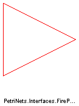
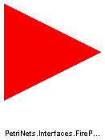
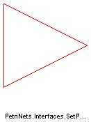

connector FirePortOut "FirePort with output icon" extends FirePort; end FirePortOut;
connector SetPortIn "SetPort with input icon" extends SetPort; end SetPortIn;

connector FirePortIn "FirePort with input icon" extends FirePort; end FirePortIn;

connector SetPortOut "SetPort with output icon" extends SetPort; end SetPortOut;

connector FirePort Boolean state "State of connected place"; Boolean fire "True, if transition fires"; end FirePort;
connector SetPort Boolean state "State of connected place"; Boolean set "True, if transition fires"; end SetPort;